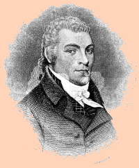

Thomas Smith Webb
According to traditional sources, Thomas Smith Webb was born in Boston in October 1771. His parents, Samuel and Margaret Smith Webb, were said to have been recently arrived, English ancestry emigrés.
Following a basic education where he is said to have also learned French and Latin, he was apprenticed to a Boston printer at age sixteen. He followed that trade to Keene, New Hampshire where he became a Mason in December 1790. A few years later, he removed to Albany. 
This transplanted Yankee was in Albany by 1793 where he is said to have established a paper staining factory. He also is said to have owned and operated a book store. While in Albany, his enterprises encompassed a number of partners including Englishman John Hammer. in June 1795, the Albany Gazette advertized his availability as a paperhanger and that he was located on lower State Street.
In October 1797, he married "Mrs." Martha/Patty or Polly Hopkins in Boston. The marriage is said to have produced five children. Following the death of his wife, perhaps in 1809, Webb married her sister, Hitty, with whom he had four more children.
He was twenty-six and a member of the Union Lodge in Albany when he issued Freemason's Monitor, or Illustrations of Masonry with the imprint: "Printed at Albany for Spencer and Webb, Market-street, 1797." A subsequent edition noted that it was "By Thomas S. Webb, Past Master of Temple Lodge, Albany, and H. P. of the Providence Royal Arch Chapter." Webb also was a poet and composer of some note.
In 1797, he was identified as the first vice-president and a trustee of the Albany Mechanics Society. However, his name is missing from the printing of its running list of members.
In 1797, he presided over a Masonic convention in Boston. In 1799, the second ward assessment roll valued his house, lot, and personal property on Maiden Lane and his lots in the first ward moderately. However, by the end of the year, he had moved his family to Providence, Rhode Island where he resided for much of the remainder of his life.
One-time, short-time Albany resident Thomas Smith Webb died in July 1819 at the age of forty-eight. He is said to have died in Cleveland Ohio although his remains finally were interred beneath a large monument in Providence. A number of Masonic lodges have been named for him. He probably was not closely related to the soldier and Methodist missionary Thomas Webb who was in Albany prior to the War for Independence.
Likeness: Adapted from an engraving of unknown origin that may have been first published in 1892 and presented via Wikipedia.
{kind=link}